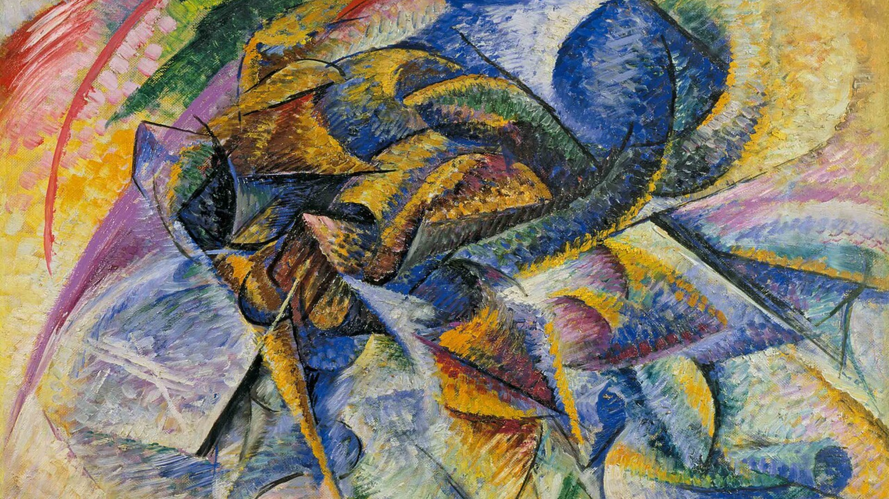

Maison Sport
Santé

L'Intention
Ce projet académique et professionnel avait pour but de réaliser une interview en collaboration avec la Maison Sport Santé d’Elbeuf.
L’objectif était de sensibiliser à l’importance de l’activité physique et de découvrir les missions de cette structure locale à travers le témoignage de ses intervenants.
Nous devions gérer toutes les étapes du projet : préparation de l’interview, captation vidéo, prise de son et montage.
Direction artistique
Pour respecter l'univers visuel de la MMS, j'ai repris les couleurs de leur logo afin de réaliser des petits motions servant de transition à chaque question posée.
Nous avions étudié le multicam et l'avons donc utilisé dans cette interview afin de donner de la dynamique à l'interview.
.png)
Le Montage / Tournage
Le tournage s'est fait en groupe, où j'occupais le poste de caméraman de la caméra principale ( face à l'interviewée ), le montage quant à lui a été réalisé en 6h sur les logiciels Adobe Premiere Pro et Adobe After Effects pour les transitions et les animations.